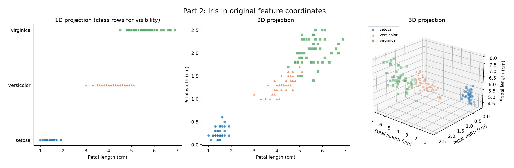
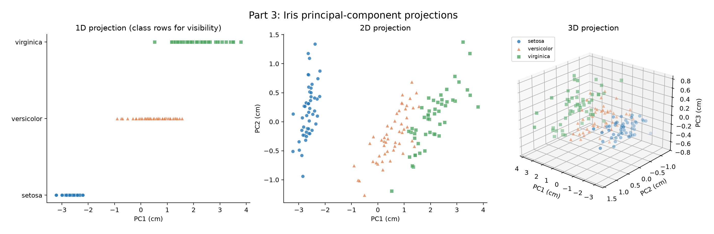
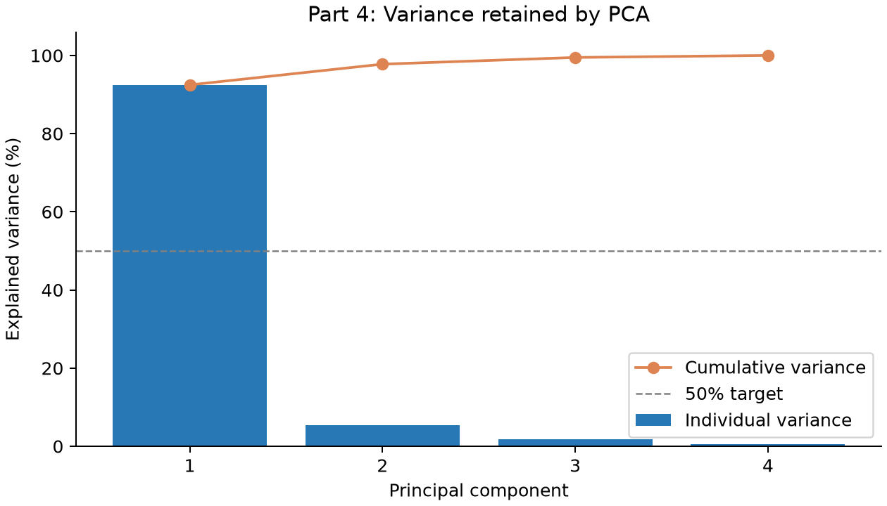
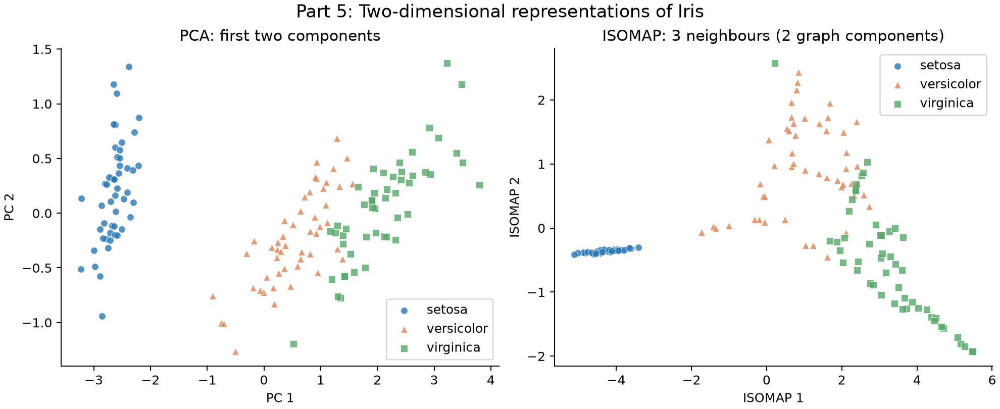

Homework 3
PCA, data visualization, compression, and nonlinear dimensionality reduction.
Parts 2–5 use the 150-flower Iris dataset with four measurements in centimetres. Labels identify species in plots and are not used to fit PCA or ISOMAP. PCA centers the original features without scaling them to unit variance.
Run instructions · Dependencies
Part 1: PCA by hand
The calculations show that the mean is (0, 1), and the first principal component is (1, 1)/√2. The L2 reconstruction errors are 1/√2 ≈ 0.7071 for (3, 3), and 0 for (3, 4).
Part 2: Original feature visualizations
Using petal length alone clearly separates setosa from the other species, although versicolor and virginica overlap. In this 1D view, the species are placed on separate rows to make the points easier to see, so separation should be judged along the horizontal axis.
Plotting petal length against petal width gives a clearer view of the class structure, with setosa forming a distinct cluster and the other two species forming groups that overlap near their boundary. Adding sepal length in the 3D view preserves this pattern without completely separating versicolor and virginica. Among these selected views, the 2D petal plot is the easiest to interpret while still showing the main species groupings.

Part 3: Principal component analysis
PCA was applied to all four measurements after centering, without standardizing or whitening them. In the order sepal length, sepal width, petal length, and petal width, the mean is (5.843333, 3.057333, 3.758000, 1.199333) cm. Each flower’s score on axis j is calculated by projecting its centered measurements onto that axis: z_j = (x − μ) · w_j.
Each row of the table below gives a unit principal-component vector, and the four vectors are mutually orthogonal. An axis can point in either direction, so reversing its sign only reflects the plot without changing the information retained.
PC1 has its largest loading on petal length and clearly separates setosa from the other species. The first two PCs reveal the broad species groups, although versicolor and virginica still overlap. Adding PC3 preserves more variation without making those groups completely distinct, which is consistent with PCA’s aim of capturing variance rather than maximizing class separation.

Principal axes (rows PC1–PC4)
Part 4: Data compression
For the centered data matrix X_c, the squared Frobenius norm equals the sum of squared singular values. Since the covariance eigenvalues satisfy λ_j = s_j²/(n − 1), the common factor cancels when calculating the fraction of variance retained. This connects explained variance to reconstruction error:
Explained fraction for k PCs = Σ(j ≤ k) λ_j / Σ(all j) λ_j = 1 − ‖X_c − X̂_c,k‖_F² / ‖X_c‖_F².
The first two PCs retain 97.7685% of total variance. Using the total centered squared Frobenius norm of 681.3706 cm² and the two-PC residual of 15.204644 cm² gives 1 − 15.204644/681.3706 = 0.977685, confirming the same result from reconstruction error. Across all feature entries, the reconstruction RMSE is 0.159189 cm.
Only one PC is needed to explain at least 50% of the variance because PC1 already accounts for 92.4619%. Keeping two coordinates per flower halves the original coordinate count, although reconstruction also requires the shared mean and component vectors. This makes PCA useful for compression here, but the amount of variance retained does not by itself tell us how accurately the species can be classified.

Explained variance
Part 5: ISOMAP and PCA comparison
ISOMAP was applied to the same four measurements using three nearest neighbours and a two-dimensional embedding. It estimates geodesic distances from shortest paths through the neighbourhood graph, then embeds those distances using classical MDS. Scikit-learn performs this step through a kernel eigendecomposition rather than the gradient-descent procedure described in the handout.
The original undirected graph contains two disconnected components, one with all 50 setosa flowers and another with the 100 versicolor and virginica flowers. To produce an embedding, scikit-learn adds connections between these components. Their relative placement therefore depends on those added connections, a limitation recorded in the saved diagnostics and warnings.
Both plots clearly isolate setosa, while ISOMAP spreads the other two species along a curved structure with some overlap near the transition. For compression, I prefer PCA because two PCs retain 97.77% of the variance and allow direct reconstruction of the original measurements. PCA also minimizes squared reconstruction error among rank-two linear representations, whereas ISOMAP aims to preserve graph geometry and provides neither a directly comparable explained-variance percentage nor a built-in inverse transform.
Given the disconnected three-neighbour graph, PCA is also a reasonable choice for visualizing this dataset. However, the plots alone do not show which representation would classify species more accurately. That comparison would require held-out evaluation, with dimensionality reduction fitted separately within each training fold.

Embedding coordinates (CSV) · Graph diagnostics and warnings (JSON)
References
The bundled scikit-learn data includes two corrected observations relative to the older UCI iris.data file. All computations here use the bundled version consistently.